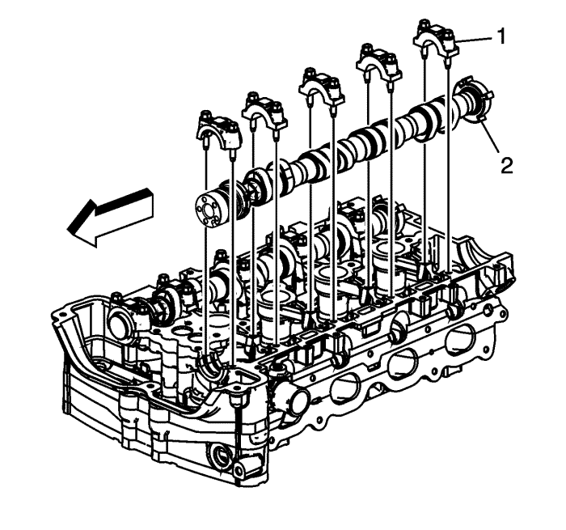
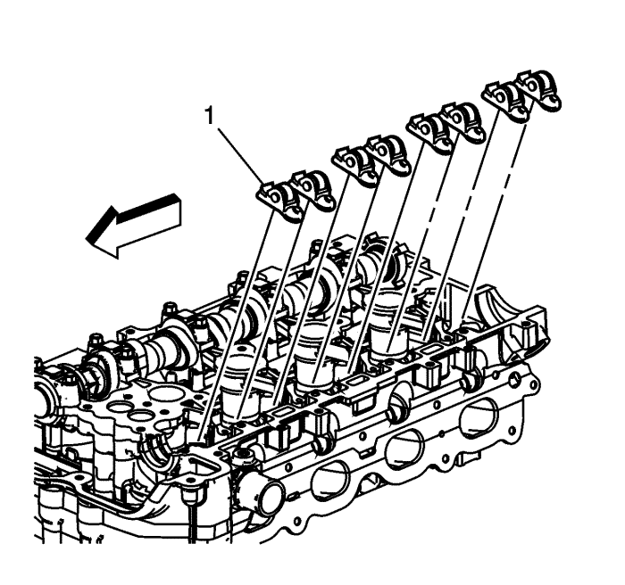
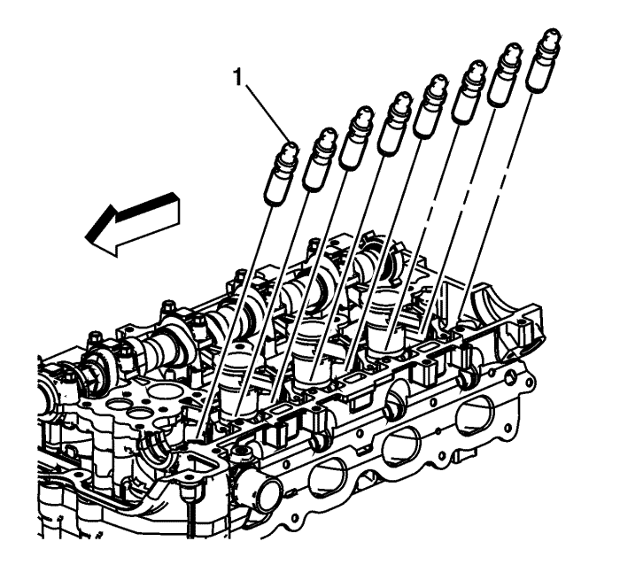
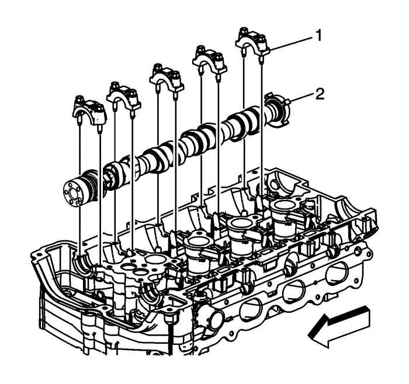
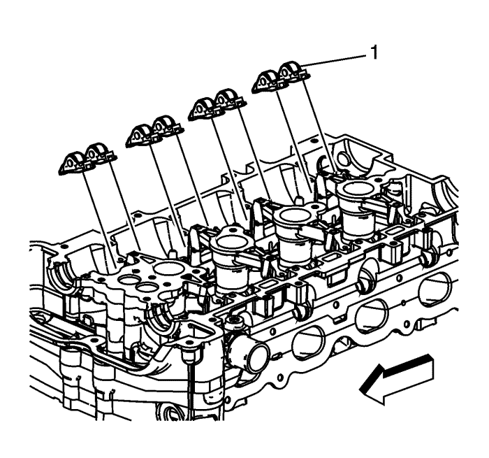
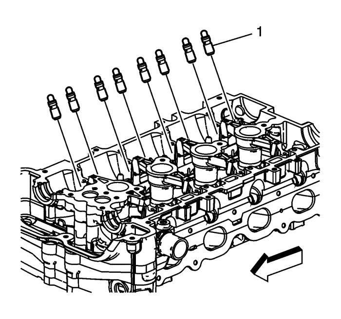

Desmontaje del árbol de levas de admisión y escape, sombrerete del cojinete, y regulador de juego — LTD, LE5
Extracción del árbol de levas de admisión y componentes

Nota: Extraiga cada perno de sombrerete una vuelta cada vez hasta que no exista tensión de resorte que presione sobre el árbol de levas.
- Marque los sombreretes de árbol de levas para asegurarse de que se montan en la misma posición.
- Extraiga los pernos de sombrerete de árbol de levas de admisión.
- Retire las tapas del árbol de levas (1).
- Desmonte el árbol de levas de admisión (2).

Nota: Mantenga en orden todos los empujadores de dedo de rodillo y compensadores de juego hidráulicos de modo que puedan volver a montarse en sus correspondientes ubicaciones.
- Extraiga los empujadores de dedo de rodillo de árbol de levas de admisión (1).

- Extraiga los compensadores de juego hidráulicos (1).
Desmontaje del árbol de levas de escape

Nota: Extraiga cada perno de sombrerete una vuelta cada vez hasta que no exista tensión de resorte que presione sobre el árbol de levas.
- Marque los sombreretes de árbol de levas para asegurarse de que se montan en la misma posición.
- Extraiga los pernos de sombrerete de árbol de levas de escape.
- Extraiga los sombreretes de árbol de levas (1) garantizando que se marcan y acoplan nuevamente en la misma posición en el conjunto.
- Desmonte el árbol de levas de escape (2).

Nota: Mantenga en orden todos los empujadores de dedo de rodillo y compensadores de juego hidráulicos de modo que puedan volver a montarse en sus correspondientes ubicaciones.
- Extraiga los empujadores de dedo de rodillo de árbol de levas de escape (1).

- Extraiga los compensadores de juego hidráulicos (1).
| © Copyright Chevrolet Europe. All rights reserved |